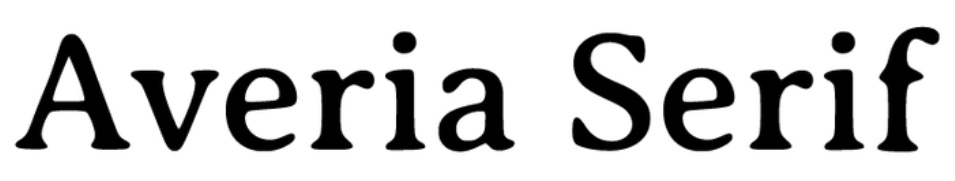

this issue is about creativity within constraint. we hope it makes you think about your own struggle to stand out while fitting in.

When you read Pilowlava, the first thing you read is Pilowlava. Its bulbuous strokes jut out with a wonderfully haphazard and syncopated rhythm, and you've got to it read several times before you can tap your foot to it. Eventually you parse out its alphabet. There's a P, that's a W, what an interesting way to write an I. Only then do you actually read it. And in that latency between perceiving it and engaging with it, Pilowlava's attempt to communicate is lost.
In our time of tense high-stakes self-actualization, Pilowlava gets identity across effortlessly. It's great for applications where establishing and explaining oneself is the only goal: a sour beer's label, an upscale headshop's logo, a Pratt student's endearingly overdone web design portfolio. But once the sentence doesn't start with "I am," Pilowlava fumbles over its words. The letters dont quite fit in the eye, they certainly don't string together in a sentence, and when viewed as a large body of text they may as well be hieroglyphics.
Use promo code RTICKUL8 to get 0% off a free download of Pilowlava. You should donate tho.
Stats & Statistics
| Procilitivies and preferences |
Who are they wearing |
Airpod content |
Mexico City modern art scene
ENM, but only because their crush is
|
Bleached fuzzy red distressed wool cardigan
Steel
Cropped jeans
Black loafers
|
Silence
Foreign language podcasts
Unanswered phone calls
|

Averia Serif's designer had a vision - that's obvious. Under caving-in ceilings, in a room somehow dry and musty, among 2007 LSAT prep books and Kurt Vonnegut reprints, lies a used book store's collection of pages at various stages of yellowing. The Averia Serif letters dyed into them are regular but imperfect. Any description other than "booky" feels partial and technocratic. Averia Serif is steeped in history: comfortable, human, personal.
But it's not. Averia Serif was generated by averaging all the glyphs on its creator's computer. It is brown, static noise, Switzerland in wartime. It is an automated product: completely indifferent, lazily magnanimous, and the lack of intention in letter and spirit.
That's the best part.
Typefaces promise that you can fit in and still be yourself. To have a life, they must conform to legibility. But to justify it, they must be unique. No typeface does this better than Averia Serif. It's defined entirely through its relationship with its peers, but speaks with a particular, self-assured voice.
You can download Averia Serif here.
Stats & Statistics
| Grandparents, ranked |
Tour of the clothing pile |
Sunday self care |
- Pop pop
- Grammie
- Jeff
- Mee maa
|
Oversized, thrifted preppy
Kitchen scissor-sheared dungarees
The same stuff their friends wear
|
Lonely mornings, facetime nights
Staring emptily
Conscious smiles with good coffee and apologetically late friends
|
In my high school, hallways were wallpapered with edutaining posters about the uncanny numeric patterns of the natural world. Fibonacci, spiraling seashells, branching tree limbs. Like an English teacher rapping Shakespeare, these posters pled that math transcended #2 pencils and studyhall - that it was pure, vital, and essential.
From what I've gathered, mid-century modern design is supposed to transcend in the same way. Chairs are tulips, tables are lilypads. As an aesthetic statement that's groan-inducing but not crazy. Look around, though - mid-century modern design has transcended beyond even the natural world to the purest realm known to myn: social status. All that matters now is commercial and cultural context.
But as Forma attests, that was always the case. In 1965, a major type foundry commissioned a team of 8 "to develop a more mature, humane interpretation of the Swiss sans serif trend". They wanted their Helvetica - the commerical runaway hit that defined the past decade's aesthetic - but updated to responsd to a decade of complaints about Helvetica's legibility and uniformity. Starting with Helvetica as the base, Forma:
- has strokes with a slight flare (check the F)
- has lower case letter with taller bodies and shorter stems (more legible)
- has immpresively tight letter spacing - it feels like a freshly straightened desk
- has some characters, like the lower case "e", that are tweaked to be more distinct from other letters (more legible)
But to the non-nerds, what's important is how Forma fits into its context. It's Helvetica enough to get on the shelf, and not Helvetica enough to be bought off it (which you can do here).
Stats & Statistics
| FMK |
LA or NYC |
Where'd their parents get their money? |
- Fuck: Tulip Chair
- Marry: Eames Recliner
- Kill: Noguchi Coffee Table
- (Bonus) Mistress: MoMA Hoodie
|
Milan :)
|
So I heard their mom's dad was Carlton Pepperidge of Pepperidge farm, but now the money is mostly tied up in art and their Foundation's real estate.
|